108 outstanding checks, 158 review actions. Native execution and agent inspection are separate from author acceptance. The catalogue retains every original prerequisite and check.
Final equipment reload restores the declared candidate view; F9 selects the base view. Production maps/art, saved fields and balance are unchanged. Character designs, unauthored progression and severe siege presentation remain open.
Retained scenes and earlier equipment checks
Controls03 is superseded by the final cooperative room below.
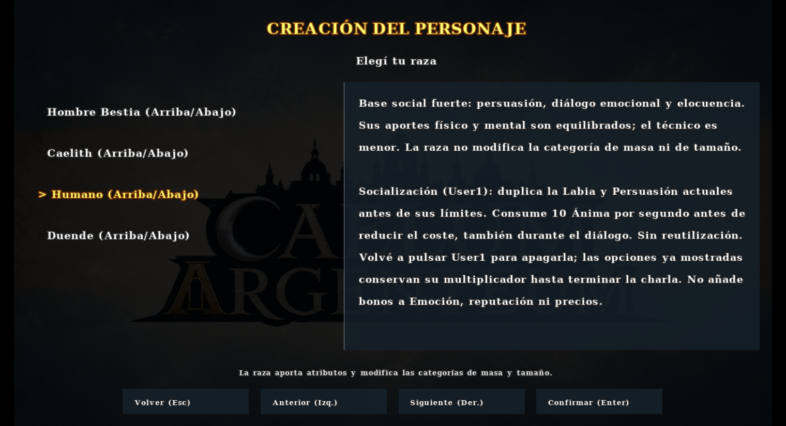
Native Spanish character creator is visible; no level/save expected.
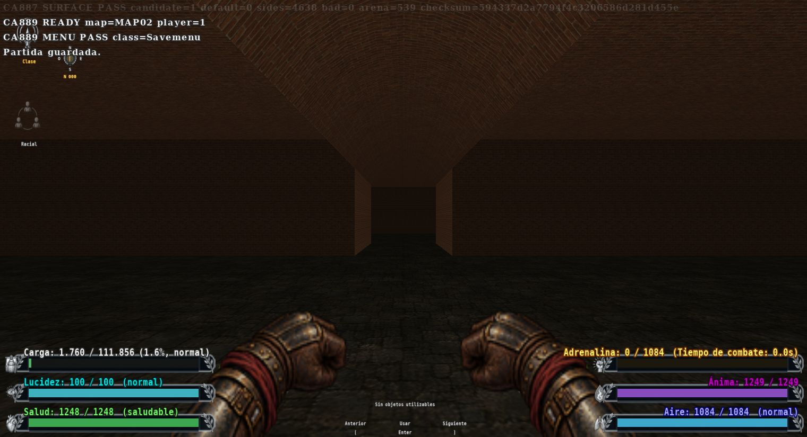
Native vault entrance and HUD visible; narrow waterline change is not assessed from this entrance view.
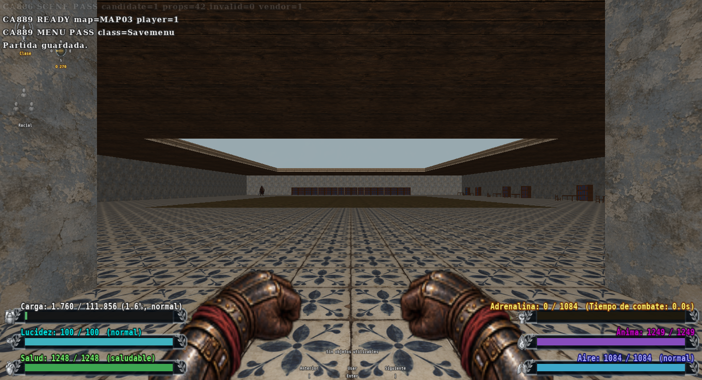
Municipal entrance, open courtyard and distant shelves/workstations visible.
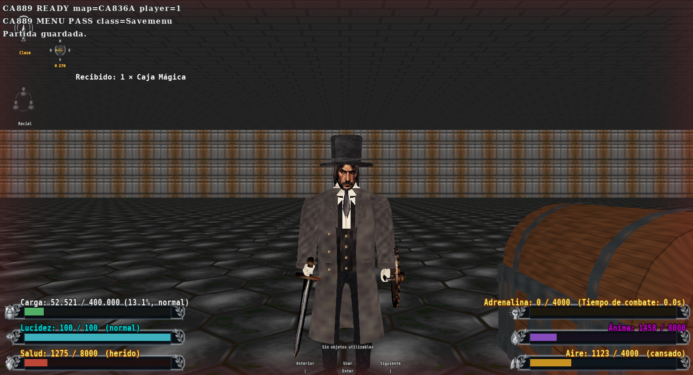
Earlier front camera is clear of the chest; before the final native resource refill.
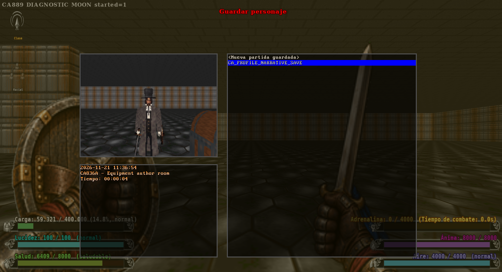
Earlier delayed screenshot includes the actual save menu; not a clean art capture.
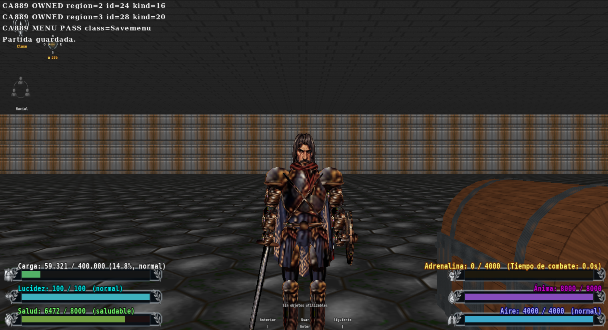
Earlier fallback body exposed missing room-option restoration.
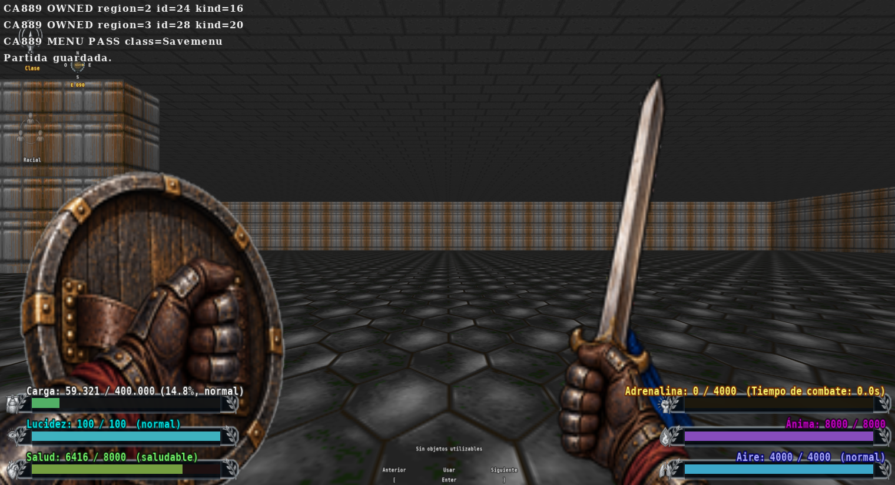
Final first-person sword/shield with gloves after controls; canonical resource changes remain visible.
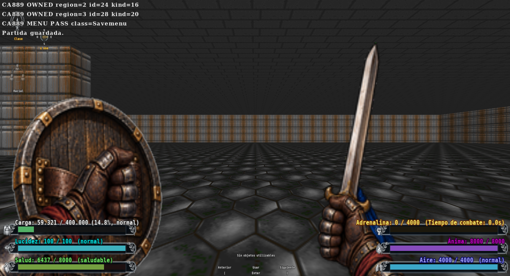
Final exact reload screenshot inspected directly.Final returned wardrobe body and chest inspected directly.
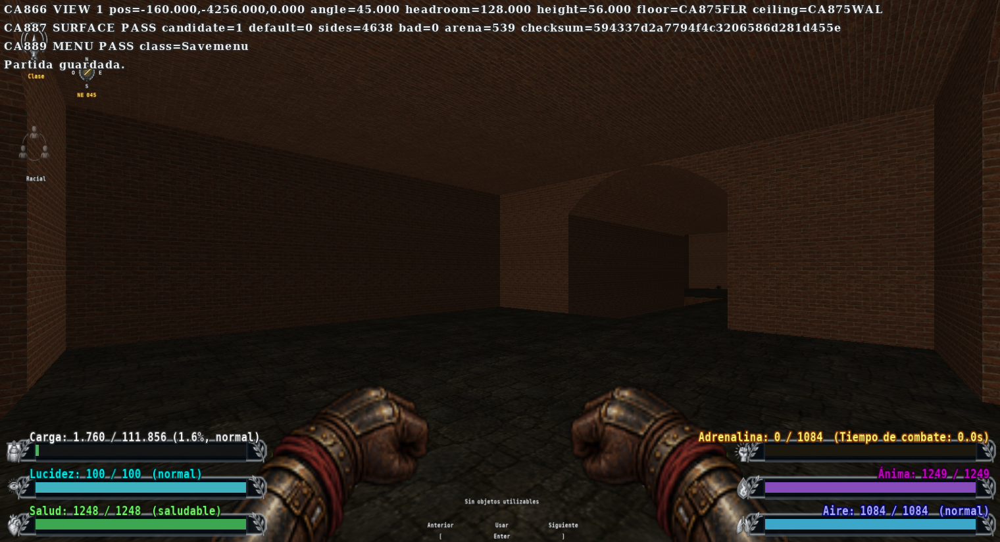
Final native waterline-option reload and subsequent camera action inspected directly.
Final equipment and corpse checks
One human player in native cooperative mode allows corpse saves. Ordinary campaign rules are unchanged.
Final one-player cooperative room: sword/shield and shared glove art after native controls.Matching reload retains the same first-person equipment view and owned IDs.
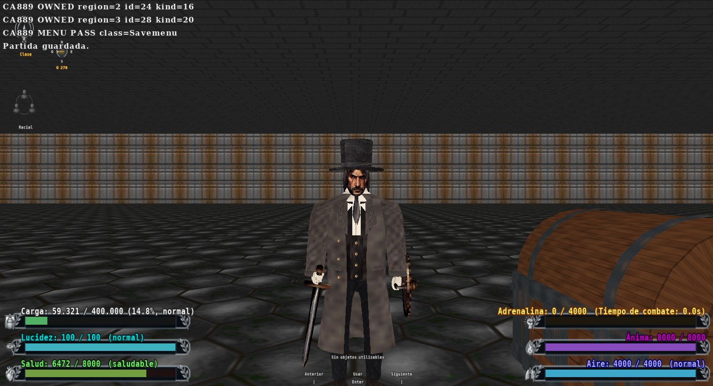
Returned candidate body wears the owned coat, hat and gloves; chest remains beside the camera.Saved native corpse retains its outfit; the existing flat death pose remains visible and awaits author judgment.
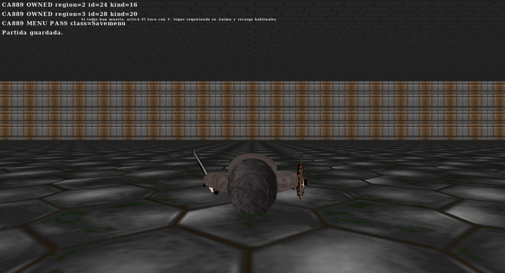
Reloaded corpse has the same four frozen wardrobe choices and retained death pose.